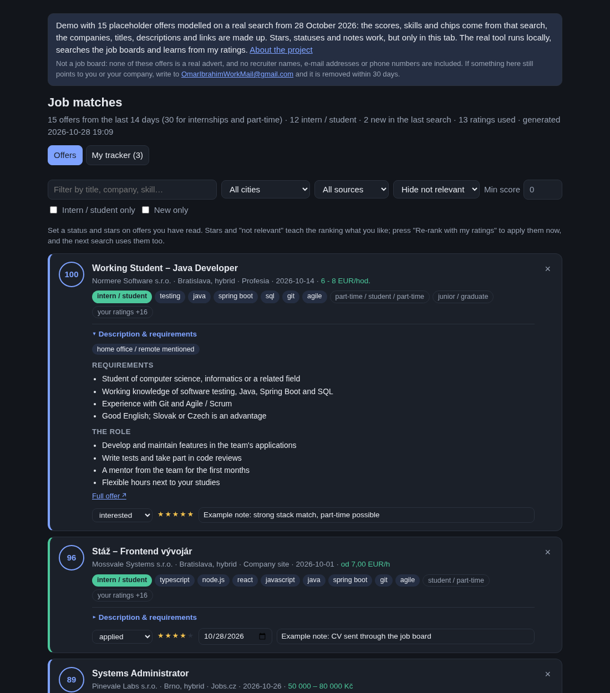
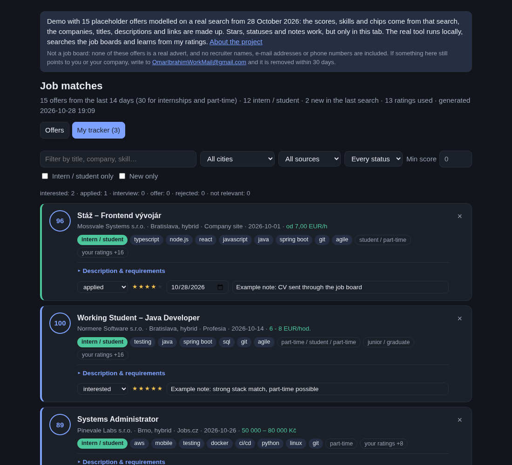

A local job-search assistant for students. It searches Slovak and Czech job boards every morning, ranks each offer against my CV, learns from how I rate them, and sends Claude agents to research company career pages overnight.
I was looking for a part-time developer role next to my studies in Bratislava and Brno. The offers were spread over several job boards and many company career pages, and most of them were full-time or senior. Checking all of that by hand every day was slow, so I automated it and kept only the offers that fit a student.
The demo uses placeholder offers modelled on a real search: the scores and matched skills are real, the companies, titles and descriptions are made up. You can filter, expand descriptions, rate offers and track applications in the browser.


Everything runs on my laptop as small systemd services. The tracker is a local web page on 127.0.0.1.
A systemd timer starts headless Claude Code agents at night. Each one covers a segment (Bratislava companies, Brno companies, other boards) from a written brief, verifies every offer page and saves structured JSON as it goes.
If the plan's usage limit stops a run, finished segments are kept, the next timer firing continues the rest, and the timer switches itself off when everything is done.
The agents may only search, read pages and write into one cache folder. No shell, no sub-agents, nothing that runs without a reason.
A read-only IMAP check lets Claude sort replies into interview, offer, rejection or needs-reply, link them to applications, draft answers and move tracker statuses along.
Agent output is treated as data, not truth: when a job board's part-time filter and an agent mislabelled full-time roles, the ranking rules were changed so a description saying full-time always wins.